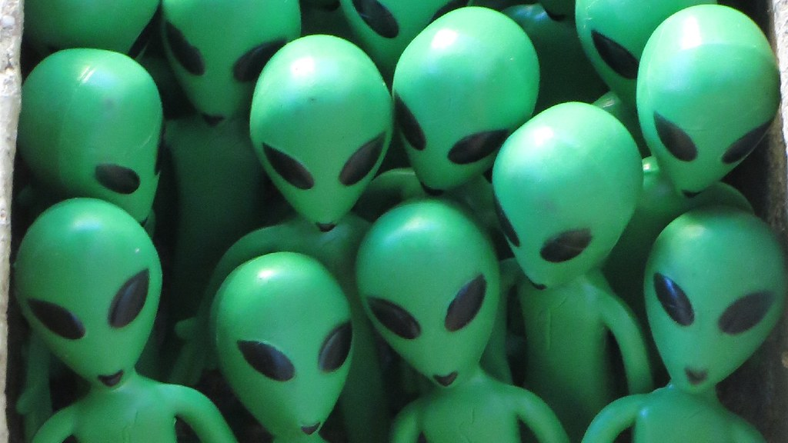

Les Illuminati sont une société secrète, au-delà de cela, les gens ne savent pas vraiment de quoi il s'agit. Historiquement, c'est une référence aux Illuminati bavarois fondés en 1776 en Allemagne par des personnes aux idéaux des Lumières qui voulaient conquérir le monde. Actuellement, on pense que les Illuminati sont à l'origine de nombreux événements étranges qui sont dissimulés par le gouvernement et qui pourraient lier les deux entités.
Leur objectif est de s'unir afin de contrôler le monde pour leur propre agenda. Le logo est peut-être la partie la plus intéressante de ce sujet. Il s'appelle L' Eyeil de la Providence et, fait intéressant, il apparaît sur le billet d'un dollar américain.
La raison la plus courante pour laquelle cet œil est sur le billet d'un dollar est qu'il agit comme un « grand frère » qui veille toujours sur vous afin que vous puissiez réfléchir à deux fois avant de faire quelque chose de mal avec l'argent avec cet œil effrayant qui vous regarde.

Il est possible que toutes ces spéculations soient tout simplement fausses et que les Illuminati qui se sont dissous en 1785 aient été les derniers forme que les Illuminati ont prise. C'est alors que le duc de Bavière, Karl Theodor, interdit les sociétés secrètes et tire le meilleur parti de leurs secrets publics. Selon cette affirmation, l' Eyeil de la Providence n'a pas d'autre signification significative que d'être l'œil qui vous surveille toujours tout en traitant de l'argent pour vous empêcher potentiellement de faire quelque chose mal. Néanmoins, même si cette affirmation est exacte, il existe de nombreuses quantités de médias impliquant le Illuminati qui les fait travailler dans l'ombre et contrôler le monde en arrière-plan et être dirigé par de puissants des personnalités telles que des célébrités ou des présidents.

Est-il possible que les extraterrestres influencent nos habitudes d'achat en ayant la capacité de changer et de prédire les l'économie mondiale à travers les Illuminati. Il a été théorisé que puisque les extraterrestres envahissent secrètement la planète, nous pouvons être influencés sans même que nous en soyons conscients. Possible les motifs des extraterrestres pourraient être que dans un avenir proche ils lanceront une invasion plus directe et souhaitent rassembler informations qu'ils pourraient utiliser contre nous pour assurer leur triomphe. Si cette théorie est exacte, cela signifierait que les extraterrestres sont déjà bien plus avancés que nous.
La première théorie explique que les Illuminati n'existent pas et est probablement la revendication la plus probable sur les Illuminati. Cependant, il est également possible que les Illuminati existent en fait sous une forme très petite, si petite que son influence est limité. La théorie populaire parmi les historiens est que les Illuminati existent en vertu des légendes créées par les Illuminati originaux qui existaient dans la seconde moitié du XVIIIe siècle. Il est encore possible que tous leurs secrets soient pas de notoriété publique et attendent d'être découverts.
La théorie suivante est un grand étirement car il est presque certain qu'il y a peu de vérité dans cette affirmation farfelue. Premièrement, même l'existence d'extraterrestres n'est pas prouvée, il serait donc difficile de trouver des preuves tangibles et crédibles de cela ce. Deuxièmement, la possibilité qu'ils contrôlent l'économie mondiale prendrait un temps incroyable quantité de travail et il serait très difficile de passer inaperçu sans l'aide de l'intérieur. Il est possible que des extraterrestres aient de l'aide des humains qui seraient considérés comme des traîtres s'ils aidaient les extraterrestres à des fins néfastes. Cette revendication est également un scénario populaire pour les films et les émissions de télévision traditionnels, car il est à la base d'une invasion extraterrestre. Pour conclure, cette affirmation n'est pas vraisemblable un car il serait trop difficile à cacher et cela entraînerait probablement une guerre entre les humains et les extraterrestres qui sont probablement plus avancés que nous s'ils étaient capables d'envahir secrètement notre planète.
 Back to top
Back to top